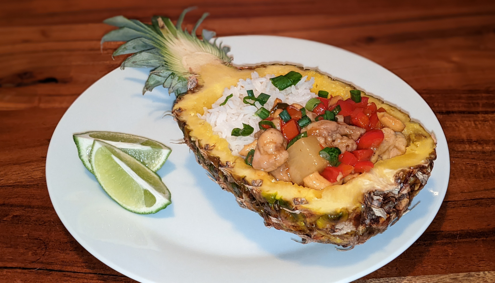
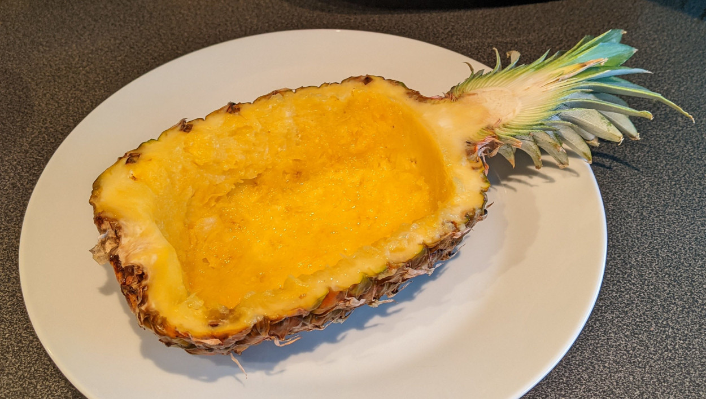

Pineapple Chicken Stir Fry

Author: Derek Nichols |
Cooked: February 26, 2022
Yields: 6 Servings | Prep Time: 10 Minutes | Cook Time: 20 Minutes
Ingredients
- 1 Tbs olive oil
- 1 lb boneless skinless chicken thighs, cut into 1" pieces
- Salt
- Black pepper
- Onion powder
- 1 red bell pepper, chopped
- 3/4 c. canned pineapple juice
- 1/4 c. low-sodium soy sauce
- 1/4 c. brown sugar
- 2 Tbs hoisin sauce
- 2 cloves garlic, minced
- 1/2 jalapeño, minced
- 2 tsp cornstarch
- 1 c. pineapple chunks
- 1/4 c. cashews
- Sliced green onions, for serving
- Cooked jasmine rice, for serving
- Lime wedges, for serving
- Optional: Shelled pineapple, for serving
Directions
- In a large skillet or wok over medium heat, heat oil. Season chicken with salt, pepper, and onion powder. Add a dash of cornstarch (~1 Tbs) and mix together. Cook chicken, turning occasionally, until golden. Stir in bell pepper and cook until just tender.
- While the chicken cooks, in a small saucepan, combine the pineapple juice, soy sauce, brown sugar, hoisin sauce, garlic, and jalapeño and bring to a simmer. Meanwhile, in a small bowl whisk together 2 tsp water and cornstarch until combined, then slowly whisk into saucepan. Cook until thickened, about 5 minutes.
- Pour sauce over chicken and let simmer 3 minutes. Stir in pineapple and cashews.
- Garnish with green onions and serve with rice and lime.
Additional Notes

- Sriracha goes great on top!
- One optional (but fun!) take on this recipe is to serve it in a pineapple boat. To do this, take a medium pineapple and halve it lengthwise, right through the crown, keeping it attached. Take one half, and use a small sharp knife to cut into and around the perimeter of the fruit about 1/4 inch in from the peel. Locate the core in the center: cut it out at an angle on both sides (it will look like a long V) and discard. Cut the remaining pineapple into a grid of small squares. Use a spoon to scoop the pieces out, leaving the pineapple empty. Repeat with the other half.